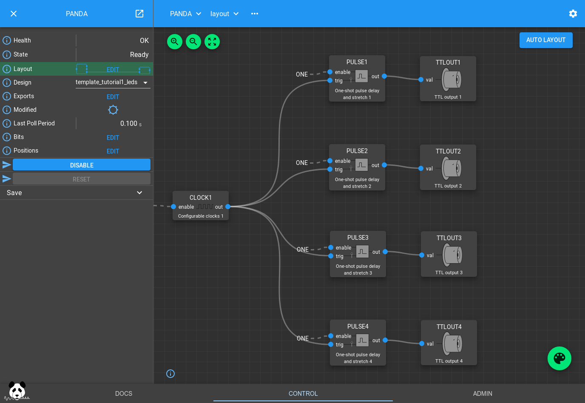
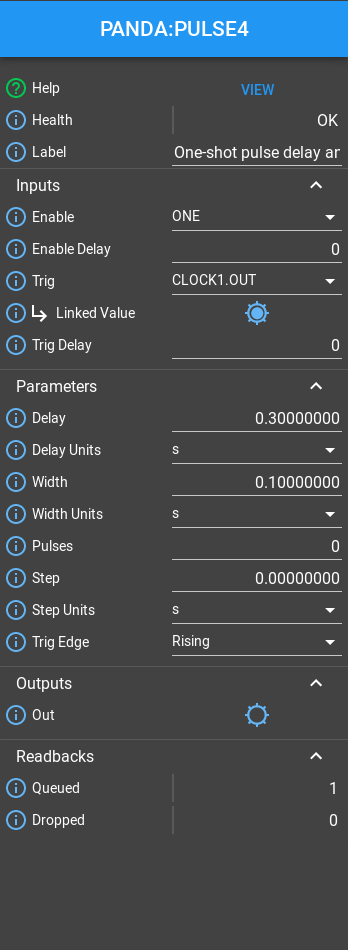

Blinking LEDs Tutorial
This tutorial will introduce you to the basics of PandABlocks, how to wire Blocks together to make different LEDs flash at different rates
Opening the GUI
Point your web browser at the ip address or hostname of the PandA and you will be greeted with a welcome page. At the bottom of this page will be links for Docs, Control and Admin. You can use the Control link to open the Web Control page that we will use in these tutorials. For more information on the Web Control, see its entry in the Docs section.
Loading the tutorial design
The Design dropdown box allows you to select from saved designs stored on the PandA. Selecting an item from this list will load the saved design over the current Block settings. You can use the Save method to save your current design if you wish to keep it.
Select “template_tutorial1_leds” from the box and the settings and wiring of the Blocks in the PandA will be changed to the following:
If you now look at the front panel of the PandA you should see the first 4 TTL output LEDs turn on sequentially, then turn off in the opposite order.
How the design works
The CLOCKS Block is creating a 50% duty cycle pulse train with a period of 1s. PULSE1..4 are taking this as an input trigger, and producing a different width pulse with a different delay for each PULSE Block. These PULSE Blocks work as a delay line, queuing a series of pulses up to be sent out when the delay expires.
If you click on one of them you can see its settings:
If you increase the delay beyond the 1s period you will notice that the
Queued field will increase, but the PULSE Block will still continue
outputting pulses after the desired delay. However if you increase the width
beyond the pulse period the Block will drop the pulse, reporting it via the
Dropped field. This is so it avoids merging them together.
You can also try clicking on the CLOCKS Block to modify the period of the input pulse train.
You can also try wiring these outputs to different TTLOUT Blocks by clicking the Palette icon, dragging a TTLOUT Block onto the canvas, and connecting it up by dragging the PULSE out port to the TTLOUT val port.
The Bit Bus
All ports on the visible Blocks are blue. They represent bits, single boolean values that can propagate through the system by connecting Blocks together. These outputs can be viewed on their respective Blocks by clicking them on the design, or all together by clicking the Bits field in the left hand pane:

If you scroll down to the section with the Pulse blocks you will see the same pattern of flashing lights as on the front of the PandA
Note
The web GUI polls the PandA at 10Hz, receiving the current value of each bit and whether it has changed. The web GUI uses this information to reflect the current value of each bit if pulsing at less than 5Hz, and displaying a 5Hz pulsing value if faster than 5Hz. This means that you will see even short pulses reflected on the web GUI. The front panel LEDs have a similar behaviour but with a maximum rate of 10Hz.
Conclusion
This tutorial has shown how to load a saved design and modify some parameters. It has also introduced the PULSE delay block that is useful for delaying and stretching trigger signals. It has introduced bit outputs and shown how they can be connected to the outside world using the TTLOUT Blocks. In the next tutorial we will read about position outputs, how they can be set and how they can be captured.